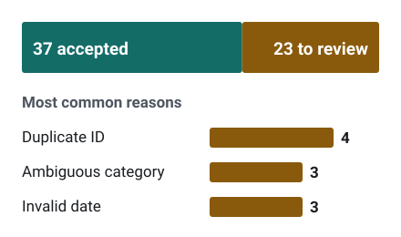
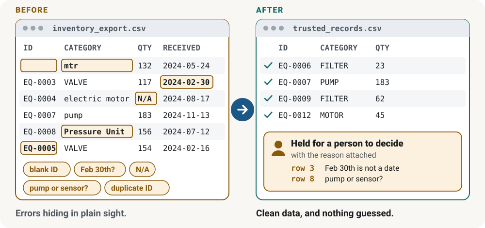
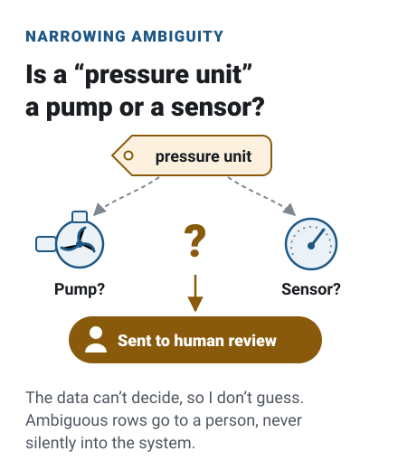
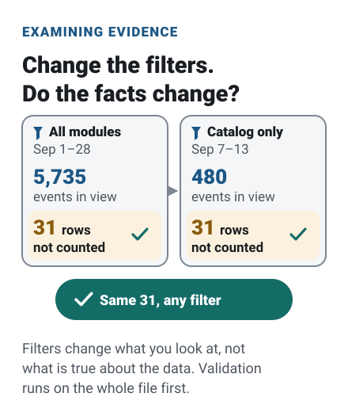
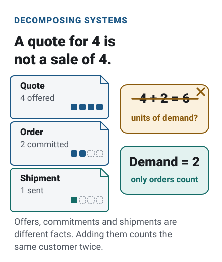
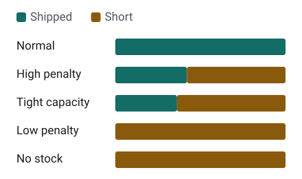
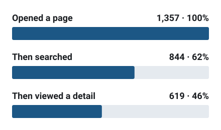
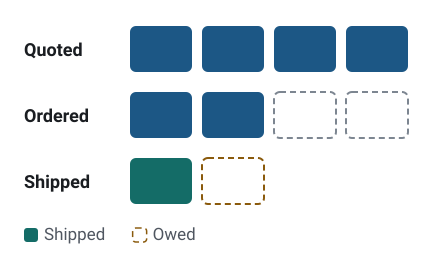

Data quality
Synthetic Data Quality Pipeline
Cleans what it safely can and hands everything else to a person, with the reason attached.
Placeholder Name · Business analysis · Applied mathematics
I’m an IT business analyst intern on an industrial B2B platform, with a background in applied mathematics and philosophy. The four projects below are simplified, independent versions of problems related to that work, built with fictional data, so you can see how I reason, not just what I did.
Messy records in. Traceable data out.

How I work
Each card pairs a reasoning habit with an example from one of the projects. The other four habits are on the Applied Thinking page.




Selected work
Each project is a simplified, independent version of a problem related to my work, built with fictional data, with a short write-up and code you can run on a laptop.

Data quality
Cleans what it safely can and hands everything else to a person, with the reason attached.

Optimization
Decides which containers are worth opening when shipping every unit isn’t, and re-checks every plan independently.

Product analytics
Turns a raw event log into daily activity, module usage and an ordered funnel, with every excluded row accounted for.

Systems design
A proposed design that keeps quotes, orders and shipments separate, so the same demand isn’t counted twice.
Experience
IT Business Analyst Intern · Heli America Inc. · August 2026–present
I work with a software lead on an industrial B2B business platform used by staff and dealers. My responsibilities include translating business processes into requirements, coordinating data-quality reviews, directing AI-assisted implementation work and checking results against operational needs.
I translate how a business runs into requirements, coordinate data-quality reviews and check results against what the business actually needs.
My background is in applied mathematics and philosophy. Mathematics gives me ways to model a problem; philosophy makes me ask what would justify the answer.